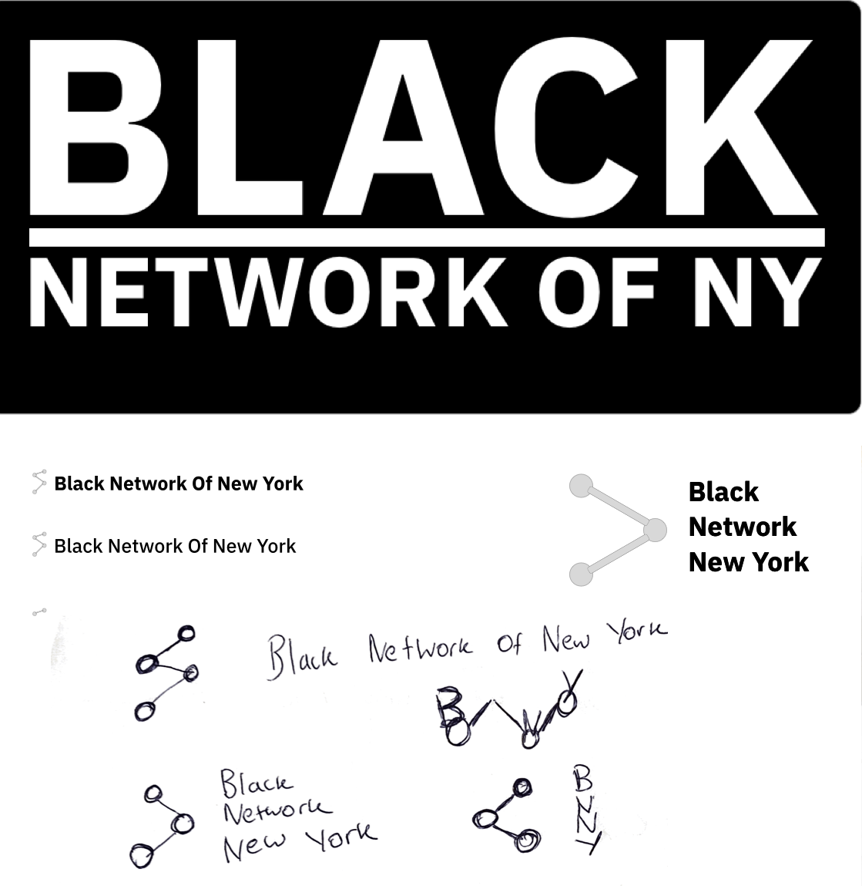
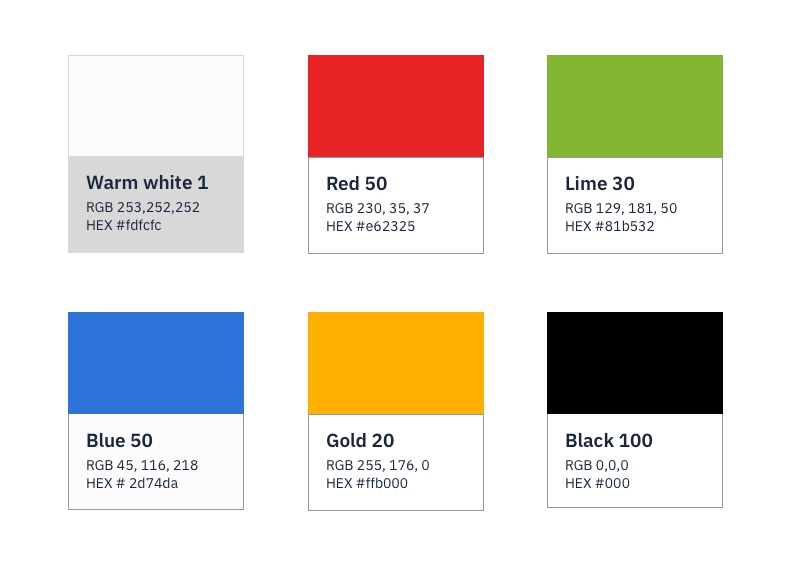
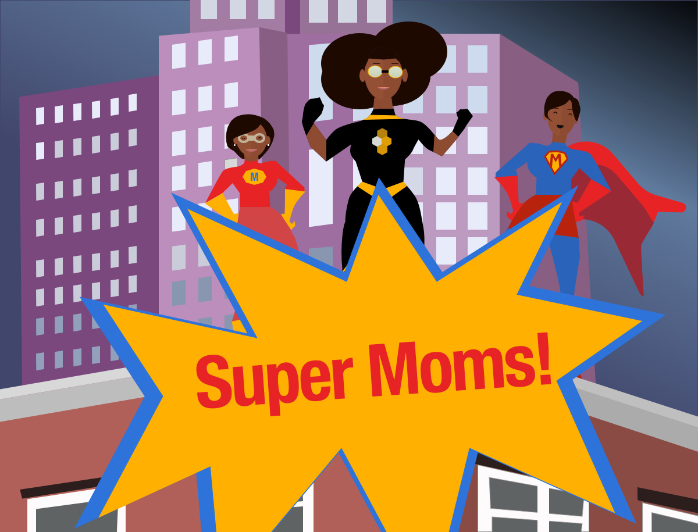

What is the Black Network of New York? The Black Network of New York (BNNY) is the Tri-state area Business Resource Group serving IBM's black professionals. BNNY exists to bring together black professionals within IBM to network, mentor, and support each other as a community so that we each can achieve collectively and individually.
What is the design need: A member of the Black Network of New York needed a person that was capable of to bring their ideas for digital to life.
Role - Creative director
Outside of my regular day job of being an Associate designer, I volunteer as a creative director for BNNY. In the beginning, I noticed that BNNY lacked a consistent brand when communicating their initiatives. Using my marketing back group, I worked to establish three core branding assets. I designed a logo for BNNY, color scheme, and guidelines for image usage.
Logo
When I created the logo, I wanted to create something that emphasis the work Black. I wanted to design something that could last a long time. I decided to use the IBM typeface in the final version to be algin to the broader IBM design language.
Color scheme
Before I arrive, BNNY didn't have a primary color scheme. I choose a color palette that was derived from IBM's first design language color palette. I prefer the color black to be the primary color because I wanted a color that could play to the powerful and elegance.
Imagery
As creative director work with many of the digital campaigns that are sent out to IBMers. I often remind my fellow board members that we should use images that uplifts black professionals.
Logo Exploration
BNNY color scheme
My favorite piece done by me.
